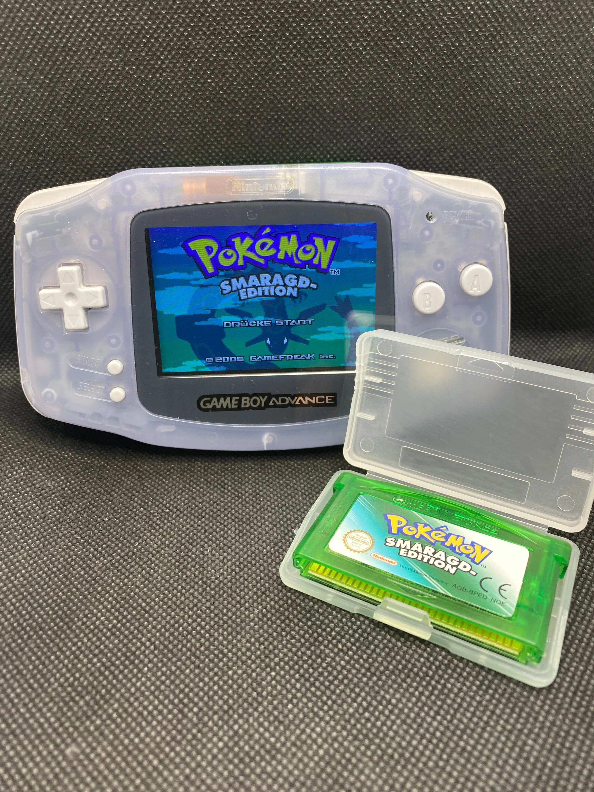
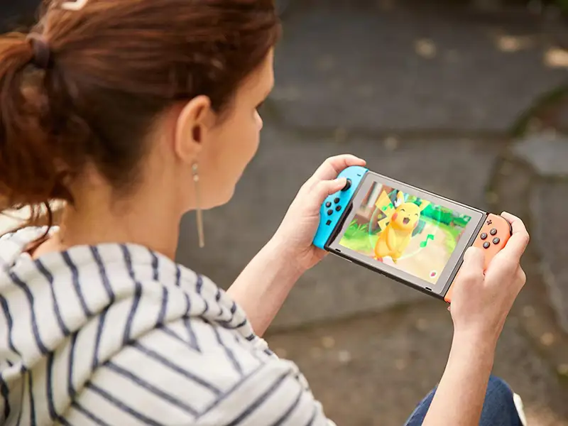

Gry pokemon
Gry wideo są fundamentem marki Pokémon i to właśnie one zapoczątkowały globalny fenomen. Pierwsze gry, "Pokémon Red" i "Pokémon Green" (w Japonii, a później "Blue" w innych krajach), ukazały się na konsolę Game Boy w 1996 roku. Gracze wcielali się w młodych trenerów Pokémon, którzy mieli za zadanie złapać, trenować i walczyć z innymi Pokémonami, by zostać Mistrzem Ligi Pokémon. Gry oferowały unikalną mechanikę – gracze mogli wymieniać się Pokémonami za pomocą kabla łączącego dwie konsole, co zachęcało do interakcji między graczami.
Każda kolejna generacja gier wprowadzała nowe regiony do eksploracji oraz setki nowych Pokémonów do złapania, zaczynając od regionu Kanto, przez Johto, Hoenn, aż po Galar i Paldeę. Seria ewoluowała także technologicznie – z dwuwymiarowej grafiki w grach na Game Boya, po trójwymiarowe światy w tytułach na Nintendo Switch, takich jak "Pokémon Sword" i "Pokémon Shield".
Spin-offy również odgrywały istotną rolę w rozwoju serii. Tytuły takie jak "Pokémon Mystery Dungeon", "Pokémon Snap", czy "Pokémon GO" – gra mobilna z 2016 roku, wykorzystująca rozszerzoną rzeczywistość – przyciągały nowych graczy i rozszerzały świat Pokémon na różne sposoby. Pokémon GO szczególnie wyróżniło się, angażując miliony użytkowników do eksploracji prawdziwego świata w poszukiwaniu Pokémonów.
Do dziś seria gier Pokémon sprzedaje się w milionach egzemplarzy na całym świecie, a jej główne założenie – "Złap je wszystkie!" – wciąż inspiruje kolejne pokolenia graczy do odkrywania, trenowania i rywalizacji w nieskończonym świecie Pokémon.